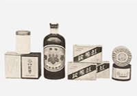
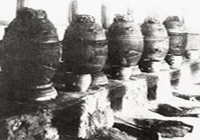
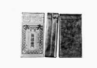

홍삼제품은 대한제국시대인 1908년 7월 경기도 개성에 삼정과(蔘政課)의 홍삼공장(개성출장소)이 설치되면서 개발되기 시작했습니다. 첫 홍삼제품은 홍삼제조과정에서 발생하는 증류액(蒸溜液) 으로 생산한 인삼고(人蔘膏)입니다. 1912년에 인삼의 줄기와 잎을 재료로 외상 등의 치료용도로 사용한 외용홍삼정((外用紅蔘精)과 내용홍삼정(內用紅蔘精 )이 개발되었습니다. 1951년 욕탕용으로 욕용(浴用 )홍삼정이 출시되었고 1917년에 홍삼분, 1930년에 홍삼정(紅蔘精)이 개발되었습니다.
-  홍삼제품 (1910)
-  20년대 말 인삼증삼 (1920)
-  뿌리삼 백관포장